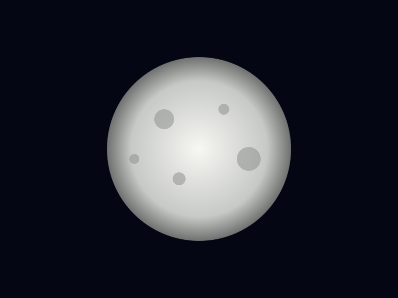
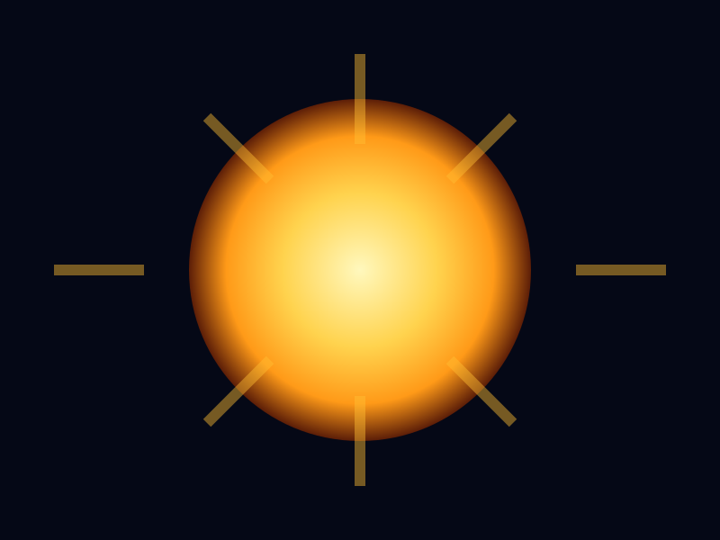
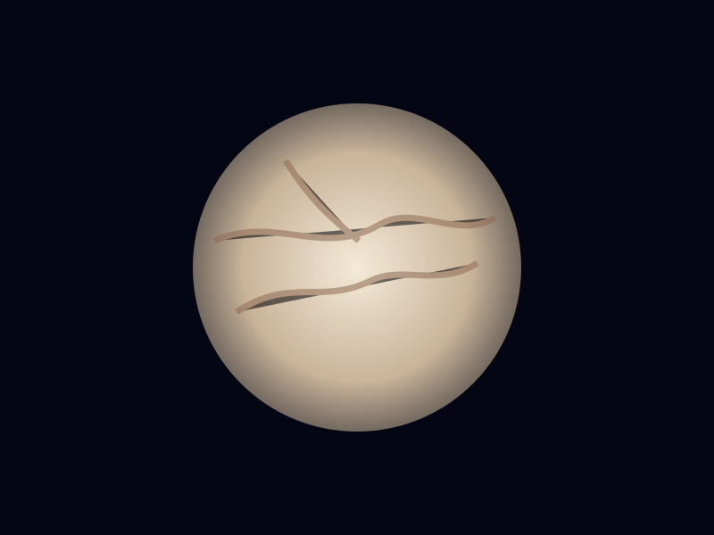
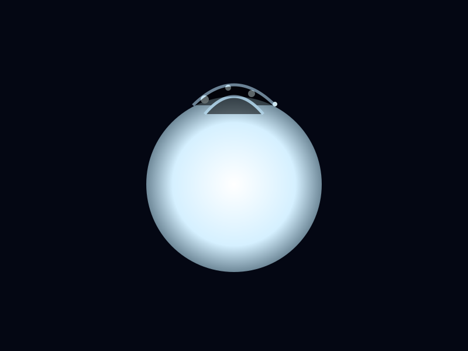
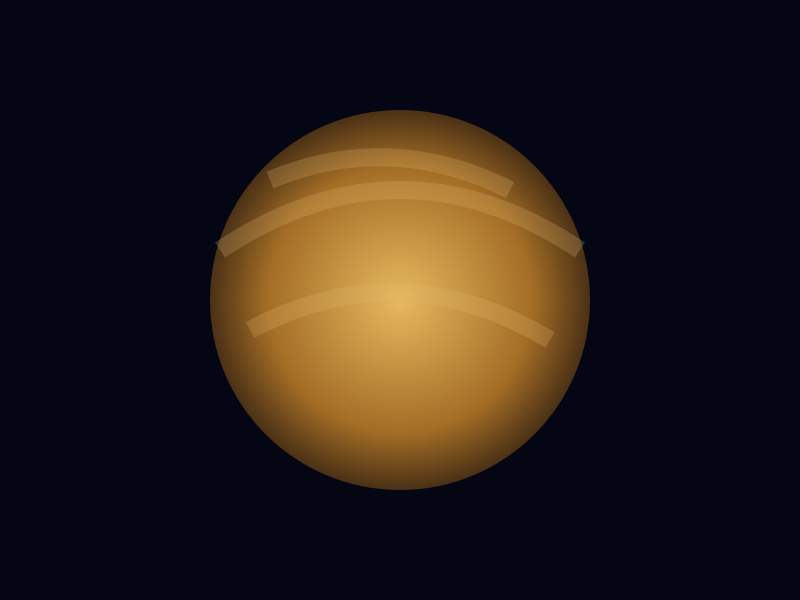
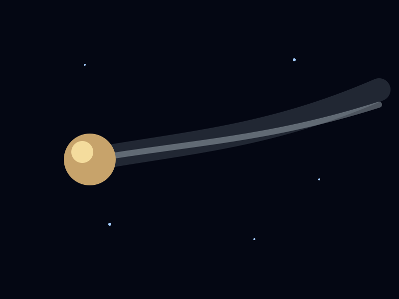
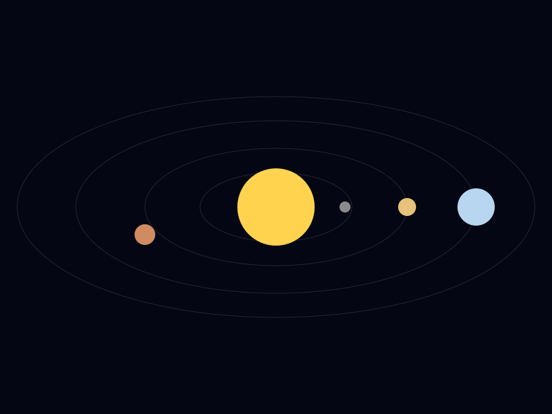

Earth's Moon
Our natural satellite drives tides, helps stabilize Earth's axial orientation and has been explored by human and robotic missions.
A personal astronomy research project
Explore our cosmic neighborhood through planets, moons, stars, comets, asteroids, eclipses, space missions and the biggest questions still unanswered.
01 / Explore
Start anywhere. The universe is not known for following a tidy table of contents, so neither do we.
Structure, fusion, solar wind, activity and the Sun's future.

All eight planets, their properties, atmospheres and missions.
🌙Earth's Moon and the strangest satellites in the Solar System.
🌑Ceres, Pluto, Haumea, Makemake, Eris and more candidates.
☄️Ancient leftovers, near-Earth objects and Solar System debris.
🌌Kuiper Belt, scattered disk, Oort Cloud and the Solar System's frontier.
💫From a collapsing cloud to a complex planetary system.
🚀Voyager, New Horizons, Parker, Europa Clipper, Lucy and more.
🧬Europa, Enceladus, Titan, Mars and what scientists actually know.
❓Planet formation, Planet Nine, oceans, life and the Oort Cloud.
🌀Watch the planets orbit and explore a visual model of galactic motion.
🖼️Visual research boards plus live NASA image searches.
🔬Findings paired with images, missions, measurements and primary-source proof.
📝Create and save your own observations or research notes in the browser.
🛰️Search the curated NASA research vault by topic, object or mission.
📚NASA, Timeanddate, ESA, JPL and other reference material.
02 / Observe
A location-aware concept inspired by the useful astronomy tools found on Timeanddate.
03 / Our Star

The Sun is a roughly 4.6-billion-year-old G-type main-sequence star and the dominant source of mass and energy in the Solar System. Its core reaches temperatures of about 15 million °C, where hydrogen fusion produces helium and releases energy.
The solar wind and magnetic activity extend the Sun's influence far beyond the planets through the heliosphere.
04 / Worlds
Search, filter and inspect the core facts from the research.
05 / Natural Satellites

Our natural satellite drives tides, helps stabilize Earth's axial orientation and has been explored by human and robotic missions.

Jupiter's icy moon shows strong evidence for a subsurface salty ocean, making it a major astrobiology target.

Saturn's bright icy moon ejects water-rich plumes from a subsurface ocean into space.

Saturn's largest moon has a thick nitrogen-rich atmosphere and a methane-and-ethane weather cycle.
06 / Dwarf Worlds
| Object | Region | Notable feature |
|---|---|---|
| Ceres | Main asteroid belt | Only officially recognized dwarf planet in the inner Solar System |
| Pluto | Kuiper Belt | Five known moons and a nitrogen-ice surface |
| Haumea | Kuiper Belt | Rapid rotation and a known ring |
| Makemake | Kuiper Belt | Distant icy world with a small moon |
| Eris | Scattered disk | Pluto-sized object that helped drive the 2006 planet-definition debate |
07 / Leftovers
Most known asteroids occupy the main belt between Mars and Jupiter, while near-Earth objects can approach Earth's orbital neighborhood.
Comets are icy, dusty bodies. Solar heating can create a coma and tails as frozen material becomes gas and dust.
NASA's OSIRIS-REx returned 121.6 grams of material from asteroid Bennu to Earth in 2023 for laboratory study.

08 / Frontier
An icy, disk-like population beyond Neptune containing Pluto and many other trans-Neptunian objects.
A more dynamically disturbed population with highly tilted and elongated orbits.
A hypothesized distant shell of icy bodies inferred mainly from the orbits of long-period comets. It has not been directly observed.
09 / Origins
A cold molecular cloud of gas and dust existed before the Solar System formed.
Gravity caused material to collapse and spin into a flattened protoplanetary disk.
Most of the mass gathered in the central region and the young Sun formed.
Dust and rock collided and accumulated into larger solid bodies.
Repeated collisions and gravity produced the planets, moons and surviving small bodies.
10 / Human Exploration
Explored the giant planets and later crossed the heliopause into interstellar space.
Visited Pluto in 2015 and Arrokoth in 2019, the most distant object explored close-up.
Flies through the Sun's outer atmosphere and studies the solar wind and corona.
Travels to Jupiter to study Europa and investigate whether its environment could support life.
Visits Jupiter Trojan asteroids to investigate primitive bodies that preserve early Solar System material.
A nuclear-powered rotorcraft mission designed to explore Titan's organic-rich environment.
11 / Astrobiology
Potentially habitable does not mean inhabited. Evidence matters.
Ancient river and lake environments show that Mars once had much more surface water.
A subsurface ocean may interact with a rocky interior beneath an icy shell.
Water-rich plumes provide an unusual opportunity to sample material from an underground ocean.
Complex organic chemistry and a methane cycle make Titan an important laboratory for prebiotic chemistry.
12 / Deep Space
Stars forge the elements that build planets and life. Galaxies evolve across billions of years, while black holes reshape the space around them. The observable universe contains a story far larger than our Solar System.
Giant spheres of plasma powered by nuclear fusion. Stars are born inside molecular clouds, evolve through different stages and can leave behind white dwarfs, neutron stars or black holes.
Vast systems containing stars, gas, dust, dark matter and planetary systems. Spiral, elliptical and irregular galaxies form part of the universe's evolving large-scale structure.
Regions of spacetime where gravity is so extreme that nothing crossing the event horizon can escape. Their gravity can influence nearby stars, gas and galactic environments.
On the largest scales, galaxies are arranged along immense filaments of matter separated by vast cosmic voids. Together, these structures form the cosmic web.
12 / Visual Research
Local illustrations keep the site usable offline. The NASA Image Library explorer below can pull current NASA imagery by topic, with source links and credits.



NASA IMAGE LIBRARY
Search the NASA Image and Video Library from the site. Results carry their NASA item link and credit text.
13 / Evidence Lab
Each item separates the finding from the evidence. Use primary-source links, mission imagery and measurements rather than turning guesses into facts.
14 / Your Research Notebook
Add your own observation, hypothesis or research note. Your entries are saved in this browser until you delete them.
13 / Questions
The broad formation model is strong, but the precise sequence of migration, collisions and atmosphere building remains an active research area.
Earth is still the only confirmed world with life. Potentially habitable environments are not proof of biology.
Similar size and composition led to dramatically different atmospheric and climate histories.
Its existence is inferred from comet orbits because the cloud is too distant for direct observation.
A hypothetical distant planet has been proposed from patterns in distant-object orbits, but no such planet has been directly detected.
15 / NASA Research Vault
Search the curated fact set used by this project. Every result keeps its original NASA source link.
16 / NASA Visual Evidence
Use NASA's official Astronomy Picture of the Day feed as another visual research source. The card below loads the current entry when the browser can reach NASA's API.
Connecting to NASA APOD…
The latest NASA APOD description will appear here when available.
16 / The Creator
I am Arinde Maurice, a Computer Science student, a professional working with Simba Fiber, and an aspiring future MIT student. I built Inspirations of the Universe to combine my interests in technology, research, design and astronomy into one project that keeps growing as I learn.
This project is both an astronomy learning platform and a demonstration of what I can build with code: interactive research, API integration, scientific visualization, responsive design and evidence-based storytelling in one growing portfolio.
17 / Evidence & References
Every serious claim on this site should be traceable. These links take you to NASA repositories, NASA/JPL data services and astronomy references used to build the project.
Visual Observatory
The Cosmic Motion Lab is a separate visual page with a single back key, planetary orbits and a conceptual galaxy-interaction scene.
The project continues
Built as an evolving portfolio project by Arinde Maurice.